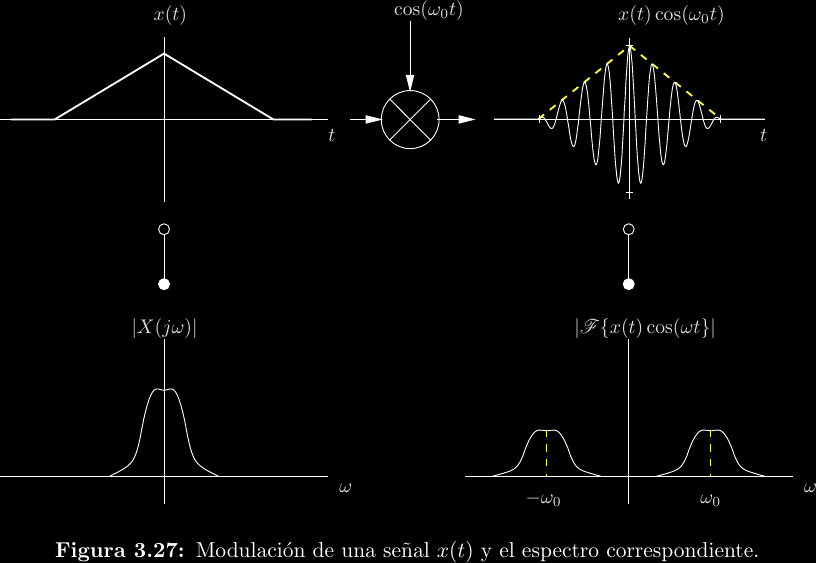
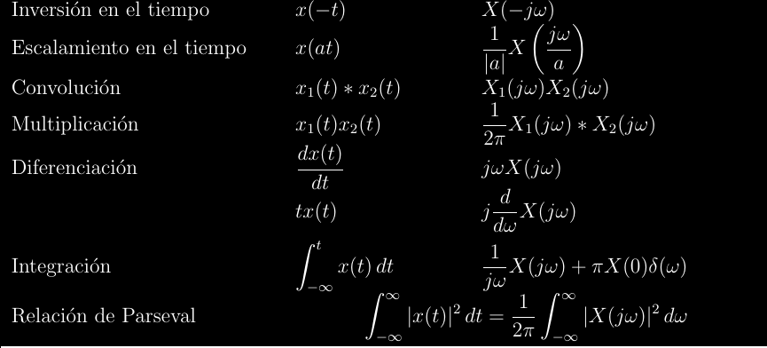
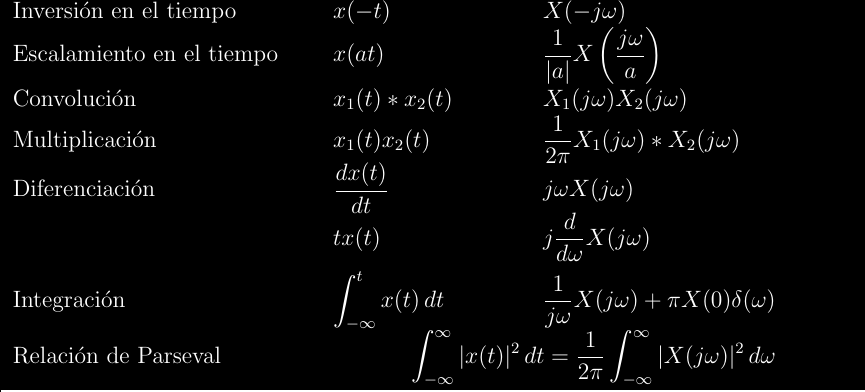
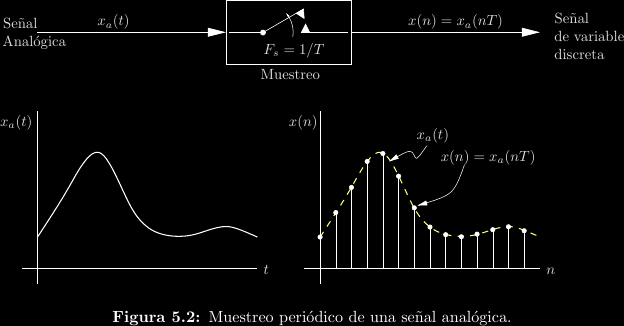
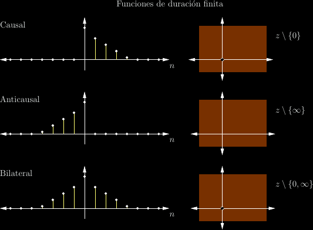
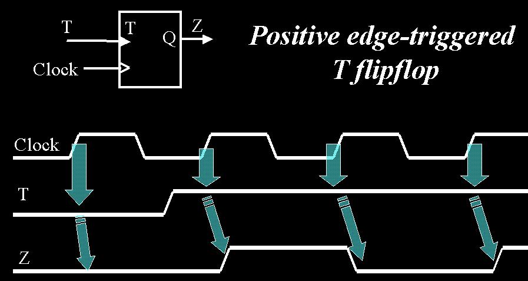

Créditos
Autor: Alejandro Soto
La gran mayoría de este resumen está basado en material elaborado por Pablo Alvarado para uso en EL4703 Señales y Sistemas.
Introducción
Muchas herremientas matemáticas son indispensables en el estudio, diseño e implementación de sistemas en ingeniería. Este curso introduce algunas de ellas.
Señales
Una señal es una función que contiene información.

-
Número de variables: ¿De cuántos estados mutuamente independientes depende la señal?
-
Dimensionalidad: ¿Cuántas escalas distintas expresa el valor de la señal?
-
Discreto o continuo: ¿La cantidad de valores válidos entre cualesquiera otros dos valores válidos distintos es siempre infinita?
-
Determinismo: ¿Puedo predicir la señal dada su historia?
Sistemas
Un sistema es aquello que transforma una señal en otra. Se dice entonces
que un sistema tiene una señal de entrada y una señal de salida. Se representan
típicamente por medio de diagramas de bloques:

Modelos
Los modelos son descripciones formales de sistemas. Por ejemplo, en este curso estudiamos modelos matemáticos para sistemas que involucran señales de variable y valor continuo o discreto.
Análisis complejo
Esta unidad introduce al manejo de los complejos \(\mathbb{C}\) como principio sobre el que se construirán otras abstracciones a futuro.
¿Por qué usamos los números complejos?
-
Veremos que las operaciones aritméticas sobre \(\mathbb{C}\) son cerradas, lo cual le atribuye muchas propiedades y simetrías convenientes que no ocurren en \(\mathbb{R}\).
-
Los complejos permiten codificar información de fase, por lo que son capaces de expresar tanto lo que ocurre ahora como lo que ya ocurrió y lo que luego ocurrirá cuando eso tiene sentido (eg. fasores). Esta noción de tiempo puede explotarse de maneras convenientes. Por ejemplo, las coordenadas rectangulares que identifican los píxeles dentro de una imagen pueden considerarse una variable temporal para fines de análisis frecuencial.
-
La geometría y trigonometría en los complejos se vuelve un problema más aritmético y de evaluación numérica que de álgebra e identidades, sin perder nunca su propósito geométrico. Esto está muy relacionado al punto anterior.
-
La integración de contorno cerrada y la derivación compleja son prácticamente la misma operación bajo ciertas condiciones.
-
Por continuación analítica, muchas operaciones en los complejos tienen el mismo desarrollo que en los reales, así que el conocimiento existente para \(\mathbb{R}\) sigue siendo útil.
En otras palabras, usamos los complejos porque son una herramienta matemática más simple y elegante para especificar ciertos tipos de problemas.
Conjuntos, estructuras y el plano complejo
Se necesitan algunos conceptos previos:
-
Conjunto: Difícil de definir formalmente sin crear paradojas, vamos a usar la noción intuitiva.

-
Estructura algebraica: Un conjunto asociado a una operación sobre elementos de ese conjunto. Por ejemplo, los reales \(\mathbb{R}\) junto a la operación de negación \(-x\) conforman una estructura de operación unaria.
-
Nos interesan las estructuras algebraicas con operaciones binarias.


El conjunto \(\mathbb{C}\)
Se define a través la unidad imaginaria \(j\) que cumple \(j^2 = -1\). \[z = a + jb = re^{j(\theta + 2k\pi)} = r\cos(\theta) + jr\sin(\theta); k \in \mathbb{Z}\]
Podemos definir muchos constructos en el plano utilizando ecuaciones e inecuaciones en términos de la variable \(z = x + jy\).
-
Puntos: Decimos \(z_0 = 1 - j2\) para referirnos al punto cartesiano \((1, -2)\). A los ejes les llamamos eje real y eje imaginario.
-
Distancias y corrimientos: La distancia entre dos puntos \(a\) y \(b\) es \(|a - b|\).
-
Rectas paralelas a los ejes: En los reales esto corresponde a las ecuaciones \(x = c\) y \(y = c\), por lo que en los complejos decimos \(\mathrm{Re}\{z\} = c\) e \(\mathrm{Im}\{z\} = c\).
-
Semirrectas: Como los números complejos pueden expresarse en forma de magnitud y ángulo, podemos construir "rayos" que provienen del origen con ecuaciones como \(\angle z = \theta\).
-
Rectas: Todos los puntos de una recta cumplen estar a la misma distancia de tanto un punto \(a\) como un punto \(b\), por lo que es posible escribir una recta como \(|z - a| = |z - b|\).

- Círculos: Sabemos que \(|z|^2 = x^2 + y^2 = r^2\), por lo que una circunferencia centrada en el origen está expresada por \(|z| = r\). Si "desfasamos" \(z\) es posible mover el origen. Por ejemplo, \(|z - (3 + j5)| \lt 2\) es el interior de un círculo centrado en \(z_0 = 3 + j5\) y con un radio de \(2\).

Conjugación
Si \(z = a + jb = re^{j\theta}\), su conjugado es \(z^* = a - jb = re^{-j\theta}\). En otras palabras, invierte el signo del ángulo, lo cual crea un "espejo" alrededor del eje real.

La conjugación tiene dos propiedades de cancelación: \[z + z^* = 2\mathrm{Re}\{z\}\] \[z - z^* = j2\mathrm{Im}\{z\}\]
Multiplicación y división
Para multiplicar en forma rectangular, tenemos que: \[(a + jb)(c + jd) = (ac - bd) + j(ad + jbc)\] Pero es más fácil si lo hacemos en forma polar, ya que: \[r_1e^{j\theta_1}\cdot r_2e^{j\theta_2} = r_1r_2e^{j(\theta_1 + \theta_2)}\] Para dividir en forma rectangular es necesario utilizar el conjugado: \[\frac{a + jb}{c + jd} = \frac{a + jb}{c + jd}\cdot\frac{c - jd}{c - jd} = \frac{(a + jb)(c - jd)}{c^2 + d^2} = \frac{z_1z_2^*}{|z_2|^2}\] Esto nos muestra da una importante propiedad del conjugado: \[zz^* = |z|^2\] Dividir también es más fácil en forma polar: \[\frac{r_1e^{j\theta_1}}{r_2e^{j\theta_2}} = \frac{r_1}{r_2}e^{j(\theta_1 - \theta_2)}\]
Raíces complejas
Sea \(z = re^{j(\theta + 2k\pi)}\), entonces \(w = \sqrt[n]{r}e^{\frac{j}{n}(\theta + 2k\pi)}\) es una raíz enésima de \(z\). La redundancia polar se vuelve importante aquí, ya que \(k\) evaluado desde \(0\) hasta \(n - 1\) produce \(n\) distintas raíces, acomodadas geométricamente por un cambio constante de rotación. Todos los complejos distintos de cero (incluyendo a los reales, que también son complejos) tienen exactamente \(n\) raíces enésimas distintas.
Potencias y logaritmos
El logaritmo complejo se puede deducir fácilmente a partir de la forma polar: \[\ln\left(re^{j(\theta + 2k\pi)}\right) = \ln(r) + \ln\left(e^{j(\theta + 2k\pi)}\right) = \ln(r) + j(\theta + 2k\pi)\] Así que en los complejos existen muchos logaritmos para un mismo número, no solo uno. Típicamente se habla del logaritmo principal (se identifica por la mayúscula), \[\mathrm{Ln}(z) = \ln_{k = 0}(z)\] Debido a argumentos parecidos tenemos que \[z^w = e^{\ln{z^w}} = e^{w\ln{z}}\] Por lo que la exponenciación también tiene una rama principal e infinitas adicionales por redundancia polar.
Funciones circulares
Recordando la fórmula de Euler, \(e^{j\theta} = \cos(\theta) + j\sin(\theta)\), podemos extender las funciones seno y coseno a argumentos complejos: \[\cos(z) = \frac{e^{jz} + e^{-jz}}{2}\] \[\sin(z) = \frac{e^{jz} - e^{-jz}}{j2}\] En este mismo estilo, podemos definir nuevas funciones análogas, llamadas funciones hiperbólicas, como las partes par e impar de la función exponencial: \[\cosh(z) = \frac{e^{z} + e^{-z}}{2} = \cos(jz)\] \[\sinh(z) = \frac{e^{z} - e^{-z}}{2} = -j\sin(jz)\]
Funciones de variable compleja
A diferencia de las funciones de variable real, las funciones \(f : \mathbb{C} \to \mathbb{C}\) de variable compleja pueden siempre descomponerse tanto en sus argumentos como en sus imágenes: \[w = f(z) = f(x + jy) = u(x + jy) + jv(x + jy) = r(x + jy)e^{j\theta(x + jy)}\] Donde \(u, v, r, \theta : \mathbb{C} \to \mathbb{R}\).

Esta idea nos permite transformar o mapear figuras en el plano \(z = x + jy\) de Argand al plano \(w = u + jv\) de Argand utilizando la función de mapeo \(w = f(z)\). Por ejemplo, consideremos el mapeo \(w = 2z + 6\) aplicado a la recta \(y = 2x + 4\).
Es posible que un punto no cambie al aplicarse un mapeo, tal que \(z = f(z)\), caso bajo el cual se llama punto fijo.
Mapeos lineales
Se les llama lineales a los mapeos de la forma \[w = \alpha z + \beta = |\alpha||z|e^{j(\angle\alpha + \angle z)} + \beta\] Ddonde \(\alpha\) y \(\beta\) son constantes complejasarbitrarios. Nótese que la segunda forma en la que se ha escrito esto describe las tres operaciones que un mapeo lineal es capaz de realizar:
-
Escalamiento: La magnitud de \(z\) se multiplica con la magnitud de \(\alpha\). Esto es equivalente a "subir la escala"; es decir, agrandar o reducir las formas geométricas.
-
Rotación: Al ángulo de todo punto \(z\) se le agrega \(\angle \alpha\). Es decir, se rota el plano entero. Recordar que las rotaciones antihorarias son positivas y las horarias son negativas.
-
Traslación: Luego de las dos operaciones anteriores (el orden de operaciones es importante) se agrega un offset \(\beta\) a todos los puntos.
Puede entenderse a un mapeo lineal como un mapeo de escalamiento y rotación seguido de un mapeo de traslación. El mapeo que vimos anteriormente es un mapeo lineal. Otro ejemplo es el siguiente:
Mapeos de inversión
Otro tipo común de mapeo es el mapeo de inversión, dado por \[w = \frac{1}{z} = \frac{1}{r}e^{-j\theta}\] La interpretación geométrica de este mapeo es un poco menos evidente. Nótense primeramente los casos extremos de magnitud para \(z\):
- Si \(|z| \to 0\), entonces \(|w| \to \infty\).
- Si \(|z| \to \infty\), entonces \(|w| \to 0\).
Esto tiene varias consecuencias en las figuras que se mapean, ya que algunas de ellas contendrán a estos casos particulares y otras no:
-
Una circunferencia que no incluye al origen se mantiene siendo una circunferencia bajo un mapeo de inversión. Su radio se invierte y la circunferencia se refleja con respecto al eje real.
-
Una circunferencia que incluye al origen se vuelve una recta. Entonces, se puede entender a una recta como una circunferencia de radio infinito.
-
Toda recta "incluye" al infinito, por lo que cualquier recta mapeada producirá un punto en el origen. La figura será una recta si la recta original pasa por el origen, o una circunferencia con vértice en el origen en caso contrario.
-
Las rectas paralelas a los ejes mantienen el comportamiento intuitivo.

Otros mapeos
Los mapeos bilineales son el cociente de dos mapeos lineales, \[w = \frac{az + b}{cz + d} = \lambda + \frac{\mu}{\alpha z + \beta}\] Donde \(\lambda = \frac{a}{c}\), \(\mu = bc - ad\), \(\alpha = c^2\) y \(\beta = cd\). Nótese que en esta segunda forma se observa más claramente qeu un mapeo bilineal no es más que un mapeo lineal seguido de un mapeo de inversión y finalmente otro mapeo lineal.
Hay muchos otros tipos de mapeos, pero ya se han cubierto los más relevantes.
Derivación compleja
En las funciones de variable real se habla de límites laterales por la izquierda y por la derecha. Se dice que un límite está definido solo si estos dos límites laterales existen y además concuerdan. Como las derivadas no son más que límites con una forma particular, una derivada existe solo si existen las derivadas por la izquierda y por la derecha y ambas concuerdan.
El concepto de límite se puede extender a los complejos, pero con una complicación adicional: existen infinitas direcciones por las cuales tomar el límite, en vez de solo dos, y todas ellas deben existir y concordar para que la derivada compleja exista. Esta misma situación ocurre para continuidad en una función de variable compleja, ya que una función \(f(z)\) es continua en \(z = z_0\) si y solo si: \[f(z_0) = \lim_{z\to z_0}{f(z)}\]
Intuitivamente, podemos entonces decir que continuidad y derivabilidad son propiedades mucho más fuertes en los complejos que en los reales, en el sentido de que son más difíciles de alcanzar. El poder decir que una función de variable compleja es derivable abre la puerta a muchas simplicacioones y garantías acerca de la función.

Estas implicaciones son tan amplias que existen varios términos para llamar a una función derivable en una región. Aunque no exactamente idénticos, de momento los trataremos como si lo fueran.
- Diferenciable: La función es continua y su derivada existe congruentemente desde infinitas direcciones.
- Holomorfa: La función es infinitamente diferenciable. Nótese que esto implica que si una función puede derivarse una vez, necesariamente puede seguirse derivando cuantas veces se quiera.
- Analítica: La función puede expandirse en una serie de potencias convergente (por ejemplo, de Taylor).
Esa tripleta de propiedades prácticamente equivalentes es uno de los resultados más centrales e importantes del análisis complejo. Es el fundamento de todo lo que sigue en esta unidad.
¿Y cómo se deriva una función de variable compleja?
Para nuestros intereses, se deriva exactamente igual que si la función fuese de variable real. Aplican las mismas reglas y teoremas. Por ejemplo, \(\left(\mathrm{Ln}(z)\right)' = \frac{1}{z}\). Equivalentemente, se puede obtener una derivada compleja por definición a través de las ecuaciones de Cauchy-Riemann.
Ecuaciones de Cauchy-Riemann
Determinar la equivalencia de infinitas derivadas direccionales no es sencillo. Por suerte, Cauchy y Riemann demostraron que es suficiente con encontrar que la función es derivable desde dos direcciones ortogonales, como son los ejes real e imaginario. Sea \(f(z) = f(x + jy) = u(x, y) + jv(x, y)\). \(f(z)\) es diferenciable/holomorfa/analítica en aquellos puntos donde se cumple que: \[\exists f'(z) \iff \frac{\partial u}{\partial x} = \frac{\partial v}{\partial y} \land \frac{\partial u}{\partial y} = -\frac{\partial v}{\partial x}\] O, equivalentemente, \[f'(z) = \frac{\partial u}{\partial x} + j\frac{\partial v}{\partial x} = \frac{\partial v}{\partial y} - j\frac{\partial u}{\partial y}\]
Si las ecuaciones de Cauchy-Riemann se cumplen, se dice que \(u(x, y)\) y \(v(x, y)\) son funciones conjugadas. Puede demostrarse que dos funciones conjugadas deben ser también funciones armónicas, es decir, que satisfacen la ecuación de Laplace \(\nabla^2 f = 0\): \[\frac{\partial^2 u}{\partial x^2} + \frac{\partial^2 u}{\partial y^2} = \frac{\partial^2 v}{\partial x^2} + \frac{\partial^2 v}{\partial y^2} = 0\] Esta relación permite encontrar una de las funciones conjugadas dada la otra, con lo cual es posible construir una función analítica completa.
Conformidad
Se dice que un mapeo \(w = f(z)\) es conforme si los ángulos entre curvas arbitrarias se preservan al aplicar el mapeo. Esto ocurre en aquellos puntos donde \(f(z)\) es analítica y además \(f'(z) \ne 0\)

Series complejas
Anteriormente mencionamos que las funciones diferenciables son también analíticas, lo cual significa poder de expresar la función en términos de una serie de potencias convergente (síntesis). En variable real, escribiríamos algo como \[f(x) = \sum_{n = 0}^{\infty}{c_n (x - x_0)^n}\] Donde \(x_0\) es el centro de la serie en la línea real y \(c_n\) son los coeficientes de la serie, los cuales podrían determinarse con el teorema de Taylor o herramientas semejantes.
Por el principio de continuación analítica, el cual ya hemos mencionado antes, puede "extenderse" la serie de potencias real al caso complejo siempre que la función real correspondiente sea analítica: \[f(z) = \sum_{n = 0}^{\infty}{c_n (z - z_0)^n}\] Esto quiere decir que tales funciones como \(e^z\), \(\sin(z)\), \(\cos(z)\) tienen el mismo comportamiento y reglas en variable compleja que lo que se conoce para variable real. Por ejemplo, tales propiedades como \(e^{a + b} = e^a e^b\) y \(\sin^2(z) + \cos^2(z) = 1\) se siguen manteniendo.
Uno de los principales cambios en series complejas es que la idea de un radio de convergencia se generaliza a regiones de convergencia (ROC), aunque estas típicamente siguen siendo asociadas a un radio. Para series de esta forma (iniciando en \(n = 0\)), se puede encontrar el radio de convergencia utilizando el criterio de d'Alembert:
\[f(z) = \sum_{n=0}^{\infty}{c_n(z - z_0)^n} \implies R = \lim_{n\to\infty}{\left\vert\frac{c_n}{c_{n + 1}}\right\vert}\]
Posteriormente se mostrará que la serie converge en la ROC \(|z - z_0| < R\). Como ejemplo se muestra una serie y su ROC:
\[\frac{1}{1 - z} = \sum_{n=0}^{\infty}{z^n}; |z| < 1\]
Múltiples expansiones
La forma más primitiva de encontrar series para una función es la división de polinomios. Por ejemplo, para \(\frac{1}{z - a}\) donde \(a\) es alguna constante, se puede realizar esta división de dos maneras. La primera es:
Esta primera serie converge si \(|z| > |a|\). Podemos decir que la serie está "centrada en infinito", lo cual se visualiza fácilmente utilizando la esfera de Riemann, una extensión de los complejos que trata a \(\infty\) como un elemento más del conjunto.

La segunda serie, que ocurre si cambiamos el orden del denominador, es:

Esta otra serie converge si \(|z| < |a|\), con centro en el origen. A continuación se muestran las dos regiones de convergencia:

Esta "ruptura" en dos síntesis distintas para la misma función se debe a que en \(z = a\) encontramos un polo, un tipo de discontinuidad (queda una división entre cero) que estudiaremos más adelante. Nótese que, debido a la virtual equivalencia entre una función analítica y una función diferenciable, la razón de delimitar la serie en un polo es que la función deja de ser analítica en el mismo.
Series de Taylor
Es posible realizar un desarrollo de potencias general para funciones diferenciables. A esto le denominamos series de Taylor. El teorema de Taylor nos otorga directamente la sucesión de coeficientes. Para un desarrollo de \(f(z)\) alrededor de \(z_0\) se cumple que: \[c_n = \frac{f^{(n)}(z_0)}{n!}\] La región de convergencia será \(|z - z_0| < R\), donde el radio de convergencia \(R\) es el máximo permisible antes de llegar a un polo de la función.
Se muestran a continuación algunas series de Taylor comunes:

Series de Laurent
Son extensiones de las series de Taylor que pueden converger en anillos, no solo en interiores y exteriores de círculos, como se observa. Esto significa que pueden cubrir áreas delimitadas por polos, algo que las series de Taylor no pueden lograr.

Las series de Laurent toman una forma más general que cubre todos los enteros, en vez de iniciar en \(n = 0\): \[f(z) = \sum_{n = -\infty}^{\infty}{c_n (z - z_0)^n}\]
Esta suma puede separarse en una parte de términos de potencias negativas denominada parte principal y una parte de términos positivos (\(n = 0\) cuenta como "positivo") que se denomina parte de Taylor. Es la parte principal la que le confiere a la serie de Laurent su capacidad para "borrar" parte de la región de convergencia que es mandatoria para una serie de Taylor. Estudiemos el caso de expandir la siguiente función en distintas ROCs: \[f(z) = \frac{1}{(z + 1)(z + 3)}\]

Singularidades, polos y ceros
Coloreado de dominio
Esto no es parte de la materia, pero lo utilizaremos para aclarar la teoría de puntos. Un diagrama de coloreado de dominio (utilicé ese para generar todas las imágenes) es un tipo de gráfica en dos dimensiones de una función en variable compleja. El tono representa la fase y la claridad la magnitud de los valores de la función. Se incluyen algunas gráficas para acostumbrar a la idea:
-
\(f(z) = z\)

-
\(f(z) = e^z\)

Puntos del dominio
Cada uno de los puntos del dominio de una función \(f(z)\) se pueden clasificar según si la función es analítica o no en ese punto. Sabemos que las series de Laurent se ven fuertemente afectadas por esta propiedad. Sea \(z_0\) un punto del dominio de \(f(z)\). Si desarrollamos una serie de Laurent para \(f(z)\) centrada en \(f(z_0)\), tenemos que:
-
Si \(f(z)\) es analítica en \(z = z_0\), \(z_0\) es un punto regular.
-
Equivalentemente, la parte principal de la serie será cero (\(c_n = 0\) para \(n < 0\)), lo cual quiere decir que será equivalente a una serie de Taylor iniciada en \(n = 0\).
\[\sum_{n = -\infty}^{\infty}{c_n(z - z_0)^n} = \sum_{n = -\infty}^{-1}{c_n(z - z_0)^n} + \sum_{n = 0}^{\infty}{c_n(z - z_0)^n} = \sum_{n = m}^{\infty}{c_n(z - z_0)^n}\]
-
Si \(f(z_0) = 0\), el punto regular es además un cero.
- El orden \(m\) del cero es la cantidad de coeficientes consecutivos al inicio de la serie de Taylor que se anulan.
-
Un punto regular que no es un cero se puede interpretar como un "cero de orden cero". Generalmente, el término "punto regular" se utiliza para ceros de orden cero y no para otros tipos de ceros, con tal de evitar confusiones.
-
Como la función es analítica en el punto regular, es infinitamente diferenciable en este punto. Un cero de orden \(m\) cumple que, \[f(z_0) = 0, f'(z_0) = 0, f''(z_0) = 0, ..., f^{(m - 1)}(z_0) = 0, f^{(m)}(z_0) \ne 0\]
-
-
Si \(f(z)\) no es analítica en \(z = z_0\), \(z_0\) es una singularidad.
-
Si los coeficientes de la parte principal se anulan consecutivamente hasta los últimos \(m\) términos, la singularidad es un polo de orden \(m\).
\[\sum_{n = -\infty}^{\infty}{c_n(z - z_0)^n} = \sum_{n = -\infty}^{-1}{c_n(z - z_0)^n} + \sum_{n = 0}^{\infty}{c_n(z - z_0)^n} = \sum_{n = -m}^{\infty}{c_n(z - z_0)^n}\]
-
Los polos aislados (es decir, no inmediatamente rodeados de otros polos) de orden finito son singularidades removibles. Esto quiere decir que podemos definir por partes a una variante de la función en donde se le asigna un valor a este punto particular que coincida con el límite de la función original.
\[\mathrm{Sa}(z) = \begin{cases}\frac{\sin(z)}{z}, &z \ne 0 \\1, & z = 0\end{cases}\]

-
Si el orden es infinito (los coeficientes de la parte principal tienen infinitos términos que no se anulan), el resultante "polo de infinito orden" se conoce como singularidad esencial. Las singularidades esenciales son "críticas" y no removibles, ya que el comportamiento alrededor de la singularidad cambia según la dirección.
-
Los puntos regulares también son "polos de orden cero", además de ser ceros de orden cero.
-
Un polo de orden \(m\) es también un cero de orden \(-m\) y viceversa.
-
\(f(z)\) es meromorfa si todas sus singularidades son removibles. En otras palabras, una función meromorfa se puede "arreglar" fácilmente para volverla holomorfa en todo \(\mathbb{C}\).
-
-
En el caso de funciones racionales, los órdenes de ceros y polos son sus multiplicidades. En la formulación siguiente, los ceros de \(N(z)\) son también los ceros de \(f(z)\), y los ceros de \(D(z)\) son los polos de \(f(z)\).
\[f(z) = \frac{N(z)}{D(z)} = A_0\frac{(z - z_{c1})^{m_{c1}}(z - z_{c2})^{m_{c2}}\cdots}{(z - z_{p1})^{m_{p1}}(z - z_{p2})^{m_{p2}}\cdots}\]
-
Pueden haber polos y ceros en \(z = \infty\), por lo que siempre hay que estudiar estos dos casos. Recordar la esfera de Riemann y su asociación con series de Taylor "invertidas" (exteriores de círculos).
-
A los polos y ceros de orden \(1\) o primer orden se les suele denominar simples.
Ejemplos
-
\(f(z) = 1 + 2z - 3z^2 = -3(z + \frac{1}{3})(z - 1)\) tiene ceros de orden \(1\) en \(z = -\frac{1}{3}\) y \(z = 1\). El resto de puntos del dominio son puntos regulares.
-
\(f(z) = z^{-1} = \frac{1}{z}\) tiene un polo de orden \(1\) en \(z = 0\). El resto de puntos son regulares.

-
\(f(z) = (z - j)^{-2}\) tiene un cero de orden \(-2\) en \(z = j\) y una singularidad esencial en \(z = \infty\).

-
\(f(z) = \frac{z + 1}{(z + j2)(z - 1)^3}\) tiene un cero de primer orden en \(z = -1\), una singularidad esencial en \(z = \infty\), un polo de primer orden en \(z = -j2\) y un polo de tercer orden en \(z = 1\).

-
\(f(z) = e^{1 / (z + 1)}\) tiene una singularidad esencial en \(z = -1\).
\[e^z = 1 + \frac{z^1}{1!} + \frac{z^2}{2!} + \cdots + \frac{z^n}{n!} + \cdots\] \[\implies e^{1 / (z + 1)} = 1 + \frac{(z + 1)^{-1}}{1!} + \frac{(z + 1)^{-2}}{2!} + \cdots + \frac{(z + 1)^{-n}}{n!} + \cdots\]

Residuos
Podemos expresar la sucesión de coeficientes de Laurent como \[\ldots, c_{-n}, \ldots, c_{-2}, c_{-1}, c_0, c_1, c_2, \ldots, c_n, \ldots\]
El coeficiente \(c_{-1}\)—el último de la parte principal—es especial y se conoce como el residuo de la serie asociada. Puede determinarse directamente a través del método del límite para separación en fracciones parciales: \[c_{-1} = \frac{1}{(m - 1)!}\lim_{z\to z_0}{\frac{\mathrm{d}^{m - 1}}{\mathrm{d}z^{m - 1}}(z - z_0)^m f(z)}\]
Donde \(m\) es el orden de polo del centro \(z_0\). Esta fórmula solo sirve para series centradas en polos y no singularidades esenciales. Nótese que el residuo es una propiedad de una serie y no de la función que sintetiza, por lo que cada posible expansión de una función tendrá su propio residuo.
En la siguiente sección estudiaremos algunas de las utilidades de los residuos.
Integración compleja
Residues arise […] naturally in several branches of analysis […]. Their consideration provides simple and easy-to-use methods, which are applicable to a large number of diverse questions, and some new results […].
— Augustin-Louis Cauchy, Sur un nouveau genre de calcul, 1826.
Como no existe un ordenamiento de los complejos (no puede responderse si \(z_1 > z_2\) en el caso general), no podemos hablar de integrales definidas a como se tratan en análisis real: \[\int_a^b{f(x)\mathrm{d}x} = F(b) - F(a); \frac{\mathrm{d}}{\mathrm{d}x}F(x) = f(x)\]
En su lugar, para integrar desde un complejo \(a\) a un complejo \(b\), debemos además definir una trayectoria de integración \(C\) de entre muchas posibles. A las integrales resultantes les denominamos de contorno o de línea: \[\begin{align*}\int_C{f(z)\mathrm{d}z} &= \int_C{(u(x, y) + jv(x, y))(\mathrm{d}x + \mathrm{d}y)} \\ &= \int_C{(u(x, y)\mathrm{d}x - v(x, y)\mathrm{d}y)} + j\int_C{(v(x, y)\mathrm{d}x + u(x, y)\mathrm{d}y)} \\ &= F(b) - F(a)\end{align*}\]

Esta última equivalencia en términos de antiderivadas es el teorema fundamental para integrales de línea y solo sirve si \(f(z)\) es analítica en todo el plano. Si \(C\) es una curva cerrada que no se interseca a sí misma—como por ejemplo una circunferencia—utilizamos una notación especial para la integral de contorno: \[\oint_C{f(z)\mathrm{d}z}\]
Teorema de la integral de Cauchy
Este es un caso particular del teorema fundamental para integrales de línea en el caso de contornos cerrados. Si \(a\) es un punto en la curva cerrada y simple \(C\) y además \(f(z)\) es analítica en tanto \(C\) como su interior, puede decirse que la curva inicia y termina en el mismo punto \(a\), por lo cual: \[\oint_C{f(z)\mathrm{d}z} = F(a) - F(a) = 0\]
Las implicaciones de este teorema son profundas, al punto de que también se le conoce como teorema fundamental de la integración compleja. Algunas de ellas son:
-
Si una función compleja es diferenciable, necesariamente también es integrable. Esto puede entenderse como una consecuencia indirecta de que las funciones diferenciables sean holomorfas, pues cada una de las infinitas derivadas debe poseer su integral en la dirección contraria.
-
Las restricciones de la condición de holomorfismo son tan fuertes que, sin importar la escogencia de la función \(f(z)\) y la curva \(C\), la integral de contorno será cero siempre que la función no tenga singularidades sobre o dentro de \(C\).
-
El valor de una integral compleja de contorno cerrado depende solamente de los polos encerrados por el contorno. Esto quiere decir que: \[\oint_{C}{f(z)\mathrm{d}z} = \sum_{n}{\oint_{C_{pn}}{f(z)\mathrm{d}z}}\]
Donde \(C_{pn}\) es algún contorno cerrado—posiblemente un subcontorno de \(C\)—que solo contiene al polo \(n\) de \(f(z)\). La suma de integrales cubre solo los polos encerrados por \(C\).

Fórmula de la integral de Cauchy
Esta relación permite encontrar \(f(z_0)\) o cualquiera de sus derivadas, asumiendo que la imagen está definida y que \(z_0\) es parte del interior de \(C\). \[f^{(n)}(z_0) = \frac{n!}{2\pi j}\oint_{C}{\frac{f(z)}{(z - z_0)^{n + 1}}\mathrm{d}z}\]
En particular, cuando \(n = 0\), \[f(z_0) = \frac{1}{2\pi j}\oint_{C}{\frac{f(z)}{z - z_0}\mathrm{d}z}\]
Lo cual lleva a un método para el cálculo de integrales de contorno alrededor de un polo \(z_0\): \[\oint_{C}{\frac{f(z)}{z - z_0}\mathrm{d}z} = 2\pi j\cdot f(z_0)\]
Teorema del residuo
El teorema del residuo es, de los tres, el resultado más general para la evaluación de integrales de contorno. Lee: \[\oint{f(z)\mathrm{d}z} = 2\pi j\sum_{i = 1}^{n}{c_{-1}^{(i)}}\]
Es decir, la suma de los residuos asociados a todos los polos dentro de la región de integración.
-
Esto quiere decir que si una expansión en serie de Laurent tiene un residuo distinto de cero, entonces el centro de la serie es un polo. Esto coincide con lo que ya conocemos, puesto que si \(c_{-1}\) es distinto de cero entonces el centro \(z_0\) es un polo de al menos primer orden.
-
Junto a la fórmula de la integral de Cauchy, permite relacionar el valor de \(f(z_0)\) con el residuo de \(\frac{f(z)}{z - z_0}\) para una expansión centrada en \(z_0\). Es decir, este teorema ayuda a "agregar polos"..
Parametrizaciones
Frecuentemente encontraremos patrones regulares que permiten simplificar nuestras integrales. Algunos de ellos son:
-
Arcos con centro en el origen: En estos casos podemos realizar la sustitución \(z = e^{j\theta} = \cos(\theta) + j\sin(\theta)\), lo cual nos permite reducir la variable de integración a una variable real angular.

-
Líneas horizontales o verticales: En estos casos encontraremos que alguno de \(\mathrm{d}x\) o \(\mathrm{d}y\) es cero. Nuevamente se reduce el problema a integrandos complejos con variables de integración reales.
Evaluación de integrales reales
Las integrales complejas de contorno simplifican el cálculo de algunos tipos de integrales reales a través del uso de estos poderosos teoremas.
Integrales impropias sobre todos los reales
Dada alguna función real \(f(x)\) se tiene por continuación analítica que \[\int_{-\infty}^{\infty}{f(x)\mathrm{d}x} = \oint_D{f(z)\mathrm{d}z}\]
Bajo la condición de que \(\lim{z \to \infty}{z f(z)} = 0\). \(D\) es el contorno que se muestra a continuación, donde el radio \(R\) tiende a infinito:
Integrales de funciones trigonométricas
Si \(G(\sin(\theta), \cos(\theta))\) es racional y real, entonces \[\int_0^{2\pi}{G(\sin(\theta), \cos(\theta))\mathrm{d}\theta} = \oint_D{f(z)\mathrm{d}z}\]
Donde \(D\) es la circunferencia unitaria \(|z| = 1\) en dirección positiva. Puede demostrarse que las sustituciones respectivas son: \[\begin{align*}z &= e^{j\theta} \\ \mathrm{d}\theta &= \frac{\mathrm{d}z}{jz} \\ \sin(\theta) &= \frac{1}{2j}\left(z - \frac{1}{z}\right) \\ \cos(\theta) &= \frac{1}{2}\left(z + \frac{1}{z}\right) \end{align*}\]
Ejemplo
\[\begin{align*} &\int_0^{2\pi}{\frac{1}{2 + \cos(\theta)}\mathrm{d}\theta} \\ =& \oint_C{\frac{1}{jz\left(2 + \frac{1}{2}\left(z + \frac{1}{z}\right)\right)}\mathrm{d}z}; C: |z| = 1 \\ =& \frac{2}{j}\oint_C{\frac{1}{4z + z^2 + 1}\mathrm{d}z} \\ =& \frac{2}{j}\oint_C{\frac{1}{(z - (-2 - \sqrt{3}))(z - (-2 + \sqrt{3}))}\mathrm{d}z} \\ =& \frac{2}{j}\oint_C{\frac{1 / (z - (-2 - \sqrt{3}))}{z - (-2 + \sqrt{3})}\mathrm{d}z} \\ =& \frac{2}{j}\left(2\pi j\cdot\frac{1}{(-2 + \sqrt{3}) - (-2 - \sqrt{3})}\right) \\ =& \frac{2\pi\sqrt{3}}{3} \end{align*}\]

Análisis de Fourier
El análisis de Fourier es una técnica de descomposición de funciones que nos permite estudiar la dependencia en frecuencia cuando antes solo teníamos la dependencia en el tiempo. Específicamente, consideraremos dos variantes del análisis de Fourier:
-
Serie de Fourier: sintetiza el análisis de una función periódica.
-
Transformada de Fourier: relaciona funciones, tanto periódicas como no periódicas, con su espectro continuo.
Ortogonalidad
Espacios lineales
Inicialmente trataremos el caso de especios vectoriales conocidos con vectores de la forma \([ x_1, x_2, x_3, \ldots]^T\). Esta idea será generalizada a vectores abstractos, definidos por varias condiciones de linealidad que no son relevantes para la discusión. Estos vectores pueden combinarse linealmente para producir otro vector: \[\mathbf{x} = c_1\mathbf{u_1} + c_2\mathbf{u_2} + \ldots\]
Trataremos conjuntos de vectores \(\{ \mathbf{u} \}\) linealmente independientes, es decir, que no pueden reescribirse uno en términos del otro.
Intuitivamente, una base de un espacio vectorial es un conjunto de vectores linealmente independientes tal que cualquier vector en el espacio vectorial puede representarse como una combinación lineal de una serie de coeficientes con esta base. Por ejemplo, el vector \((2, 3, 4)\) en \(\mathbb{R}^3\) puede engenendarse de esta manera con la base canónica \(\{(1, 0, 0), (0, 1, 0), (0, 0, 1)\}\): \[(2, 3, 4) = 2\cdot(1, 0, 0) + 3\cdot(0, 1, 0) + 4\cdot(0, 0, 1)\]
Operaciones dentro de espacios
Algunas operaciones de interés que pueden definirse para un espacio lineal son:
-
La métrica: en vectores euclídeos es la "distancia geométrica" entre dos puntos. \[d : \mathbb{V}\times\mathbb{V}\to \mathbb{R}\] Por ejemplo, la métrica en \(\mathbb{R}^2\) es \[d(\mathbf{u}, \mathbf{v}) = \|\mathbf{u} - \mathbf{v}\|\]
-
La norma: generaliza la idea de "magnitud". \[\|\mathbf{u}\| : \mathbb{V}\to\mathbb{R}\] Para los espacios euclídeos, esto es simplemente \(\sqrt{x_1^2 + x_2^2 + \ldots}\).
-
El producto interno: generaliza al producto punto. Determina "cuánto" de un vector hay en otro vector, lo cual está muy asociado al ángulo entre vectores. \[\langle\mathbf{u}, \mathbf{v}\rangle : \mathbb{V}\times\mathbb{V}\to\mathbb{F}\] En cualquier espacio con producto interno, se puede reexpresar la norma como \[\langle\mathbf{u}, \mathbf{u}\rangle = \|\mathbf{u}\|^2\]
-
El ángulo: también es una generalización. Siempre se cumple que: \[\cos(\angle(\mathbf{u}, \mathbf{v})) = \frac{\langle\mathbf{u}, \mathbf{v}\rangle}{\|\mathbf{u}\|\|\mathbf{v}\|}\]
Por tanto, dos vectores son ortogonales (perpendiculares) si el ángulo entre ellos es de \(90^{\circ}\), lo cual se cumple si el producto interno es cero.
Espacios funcionales
Intuitivamente, podemos entender a una función como un vector funcional que tiene tantas dimensiones como permite su dominio. Por ejemplo, si definimos una función \(f(n)\) bajo el dominio \(\{1, 2, 3\}\) como: \[f(n) = \begin{cases}1;&x = 1\\2;&x = 2\\1;&x = 3\end{cases}\]
Entonces, solo dentro de este dominio, puede decirse que \(f(n)\) corresponde al vector \([1, 2, 1]^T\). Si hablamos ahora de una función \(f(n) : \mathbb{N} \to \mathbb{N}\) dada por: \[f(n) = \frac{n(n + 1)}{2}\]
Entonces obtenemos respectivamente un vector cuya enésima dimensión es el enésimo natural, es decir, un vector de infinitas dimensiones. El vector funcional será ahora \([0, 1, 3, 6, 10, 15, \ldots]^T\). Si se define una función sobre los enteros, \(f(n) : \mathbb{Z}\to\mathbb{Z}\): \[f(n) = (-1)^n n^2\]
Entonces una vez más se tiene un vector funcional de infinitas dimensiones, pero ahora no existe una "primera" dimensión. El vector será \([\ldots, 4, -1, 0, -1, 4, \ldots]^T\).
Tómese finalmente a una función real, \[f(x) = e^x\]
Ya no podemos expresar el vector funcional utilizando notación matricial, ya que el vector funcional es ahora continuo y no discreto. Por ejemplo, la dimensión \(\sqrt{2}\) del vector \(f(x)\) es \(e^{\sqrt{2}}\). Sobra decir que todo lo anterior se extiende también a los complejos. Extender a vectores de infinitas y continuas dimensiones lleva a que el producto interno es ahora una integral definida para un intervalo \([a, b]\): \[\langle f(x), g(x)\rangle = \int_a^b{f^*(x)g(x)\mathrm{d}x}\]
A partir de lo anterior se pueden expresar las demás operaciones. Por ejemplo, la norma se vuelve: \[\|f(x)\| = \sqrt{\langle f(x), f(x)\rangle} = \sqrt{\int_a^b{|f(x)|^2\mathrm{d}x}}\]
El ángulo entre dos funciones es exactamente igual que para otros espacios: \[\cos(\angle(f(x), g(x))) = \frac{\langle f(x), g(x)\rangle}{\|f(x)\|\|g(x)\|}\]
Esto quiere decir que dos funciones son ortogonales en un intervalo \([a, b]\) (posiblemente todo \(\mathbb{R}\)) si su producto interno es cero. Entonces, es posible conformar una base funcional ortogonal que es capaz de sintetizar cualquier función en el dominio dado a través de una combinación lineal.
Series de Fourier
La síntesis de una función \(f(x)\) como la combinación lineal de una base funcional ortonormal \(\{u_k(x)\}; k\in\mathbb Z\) con un vector funcional generador \(c_k\) se da de manera natural por: \[f(x) = \sum_{k = -\infty}^{\infty}{c_k u_k(x)}\]
A la anterior se le conoce como serie de Fourier generalizada, su nombre viene de que sirve para cualquier base funcional ortogonal. Dada una escogencia de \(u_k(x)\), es necesario descomponer a la función \(f(x)\) en cada una de sus dimensiones desde la perspectiva de la base \({ u_k(x) }\).
Considérese un caso simplifcado con tal de encontrar \(c_k\). Sea el vector euclídeo \((3, 5)\) junto a la base ortogonal \({(2, 0), (0, 6)}\). Intuitivamente, podemos decir que hay "\(\frac{3}{2}\) de 2" en la primera coordenada de base: \(3\). También puede decirse que hay "\(\frac{5}{6}\) de \(6\)" en la coordenada de valor \(6\) de la base. Sin pembargo, al calcular el producto punto del vector deseado con cada vector de la base se obtiene: \[\begin{align*}(3, 5)\cdot(2, 0) &= 3\cdot 2 = 6\\(3, 5)\cdot(0, 6) &= 5\cdot 6 = 30\\\end{align*}\]
Si la operación terminara aquí, esto querría decir que \(c = (5, 30)\), pero eso no puede estar bien, ya que se obtendría un valor distinto al sintetizar. Nótese que el "problema" es que el producto punto multiplica por cada dimensión de cada vector de la base, en vez de dividir. Podemos arreglar esto al dividir por el cuadrado de las magnitudes de los vectores de la base: \[\begin{align*}\frac{3\cdot 2}{2^2} = \frac{3}{2}\\\frac{5\cdot 6}{6^2} = \frac{5}{6}\\\end{align*}\]
Estos valores sí representan apropiadamente la descomposición del vector original en sus constituyentes respecto a la base, tal que \(c = \left(\frac{3}{2}, \frac{5}{6}\right)\). Esta operación de encontrar los coeficientes \(c_k\) se conoce como análisis, en algún sentido el opuesto de síntesis. Así, análisis de Fourier es cualquier análisis realizado dentro de un espacio funcional. El análisis de Fourier para series generales viene dado por: \[c_k = \frac{\langle u_k(x), f(x)\rangle}{\|u_k(x)\|^2}\]
Nótese que esto es solo una generalización algebraica del argumento anterior para vectores euclídeos. El numerador de esta fracción dice "cuánto" de \(u_k(x)\) hay en \(f(x)\), mientras que el denominador normaliza el elemento de la base (la base debe ser ortogonal, pero puede no ser ortonormal).

Serie exponencial compleja
La variable independiente se tomará ahora como \(t\) en vez de \(x\), ya que típicamente representa tiempo real. Si la función \(f(t)\) es periódica con frecuencia fundamental \(\omega_0 = \frac{2\pi}{T}\), entonces se puede sintetizar a \(f(t)\) como: \[f(t) = \sum_{k = -\infty}^{\infty}{c_k e^{j\omega_0 kt}}\]
Y su análisis, para cualquier \(t_0\) en el dominio, es: \[c_k = \frac{1}{T}\int_{t_0}^{t_0 + T}{e^{-j\omega_0 kt}f(t)\mathrm{d}t}\]
La familia de funciones \(\{ e^{j\omega_0 kt}; k \in \mathbb{Z} \}\) es ortogonal y armónicamente relacionada.
Series trigonométricas
Mucha de la matemática que hemos cubierto no había sido desarrollada cuando Joseph Fourier describió originalmente su teoría. Su formulación original de la síntesis de funciones fue en términos de senos y cosenos, a lo que se le denomina serie trigonométrica: \[ \begin{align*} f(t) &= \frac{1}{2}a_0 + \sum_{k = 1}^{\infty}{a_k\cos(\omega_0kt)} + \sum_{k = 1}^{\infty}{b_k\sin(\omega_0kt)} \\ c_k &= \frac{a_k - jb_k}{2} \\ a_k &= 2\mathrm{Re}\{c_k\} = 2|c_k|\cos(\theta_k) = \frac{2}{T}\int_{t_0}^{t_0 + T}{f(t)\cos(\omega_0kt)\mathrm{d}t} \\ b_k &= -2\mathrm{Im}\{c_k\} = -2|c_k|\sin(\theta_k) = \frac{2}{T}\int_{t_0}^{t_0 + T}{f(t)\sin(\omega_0kt)\mathrm{d}t} \end{align*} \]
Esta expresión nos acerca más al significado fundamental de las series de Fourier, ya que observamos que la función original es una suma de senos y cosenos que coinciden de la manera correcta para constituir a la función. Es posible reducir los senos a cosenos desfasados, con lo cual se obtiene una sola suma en forma de la serie de cosenoidales desfasadas: \[ \begin{align*} f(t) &= c_0 + \sum_{k = 1}^{\infty}{\widetilde{c}_k\cos(\omega_0kt + \theta_k)} \\ \widetilde{c}_k &= 2|c_k| \\ \theta_k &= \angle c_k \end{align*} \]
Con esto llegamos al hecho más importante acerca de las series de Fourier: cada armónico, con su respectiva frecuencia que es múltiplo de la frecuencia fundamental, está asociado a una amplitud y un desfase, la síntesis no es más que la combinación lineal de las sinusoides respectivas. Posteriormente, extenderemos esta idea a señales no periódicas con la transformada de Fourier.

Al "rebote" alrededor de discontinuidades, como se observa en la imagen anterior, se le conoce como fenómeno de Gibbs y es uno de los requerimientos del análisis de Fourier: solo funciona bien en vecindades continuas. Luego se cubrirán herramientas que permiten estudiar sistemas no continuos.
Los coeficientes \(c_k\) tienen un significado importante que se estudiará más adelante. A su graficación se denomina espectro de \(f(t)\).

Propiedades del análisis
-
El análisis es lineal.
-
Los coeficientes del análisis de una función par tienen parte imaginaria nula. \(f(t) = \cos(t)\) es un ejemplo de una función par.
-
Los coeficientes del análisis de una función impar tienen parte real nula. \(f(t) = \sin(t)\) es un ejemplo de una función impar.
-
Por corolario de lo anterior, toda función puede separarse en componentes simétricas, una par y otra impar, tal como realizamos antes con \(e^z\) para obtener las funciones trigonométricas hiperbólicas. \[ \begin{align*} f(t) &= f_e(t) + f_o(t) \\ f_e(t) &= \frac{f(t) + f(-t)}{2} = f_e(-t) \\ f_o(t) &= \frac{f(t) - f(-t)}{2} = -f_o(-t) \end{align*} \] Puede verificarse que \(\cos_o(t) = 0\) y \(\sin_e(t) = 0\).
-
Si \(f(t)\) es real, entonces \(c_k\) es una función hermítica: \(c^*_{-k} = -c_k\).
-
Un desplazamiento temporal de \(\tau\) provoca un factor de \(e^{-j\omega_0 k\tau}\).
-
La diferenciación provoca un factor de \(jk\omega_0\).


Transformada de Fourier
Mencionamos que el espectro de una función periódica continua está dado por los coeficientes \(c_k\) que resultan del análisis en series de Fourier. Además, notamos que este espectro es una función discreta, ya que \(k\) es una variable entera. Luego de desarrollar el análisis y síntesis en series, el mismo Fourier notó una forma de mejorar una gran limitante de su teoría, específicamente que solo sirve para funciones periódicas. La idea consistió en abusar una interpretación de funciones no periódicas, dentro de un rango finito, como funciones periódicas que tienen a ese rango como período.

Es posible realizar un desarrollo en series de Fourier para el caso anterior. Claro, solo será válido dentro de la región que realmente corresponde a la función original. Esta idea funciona, pero tiene otra limitante: el período "artificial" enmarca qué tanto de la función puede estudiarse de esta forma. Así, un paso más consiste en establecer \(T \to \infty\), con lo que se obtiene una herramienta capaz de estudiar funciones no periódicas en su totalidad, a la cual se le denomina transformada de Fourier: \[F(j\omega) = \mathcal{F}\{f(t)\}(j\omega) = \int_{-\infty}^{\infty}{f(t)e^{-j\omega t}\mathrm{d}t}\]
Nótese que esto no es más que una expresión distinta para los coeficientes de la serie exponencial compleja, ya que: \[c_k = \frac{1}{T}X(jk\omega_0)\]
La transformada de Fourier es un tipo de transformada integral, relaciona a una función \(f(t)\) con otra función \(F(j\omega)\). En otras palabras, transforma del dominio de tiempo al dominio de frecuencia. Tal como las series de Fourier sintetizan funciones periódicas a partir de su análisis en forma de sinusoides desfasadas con frecuencias discretas, una transformada de Fourier determina el contenido de frecuencias de una función. Nótese que ahora estas frecuencias son continuas y no un múltiplo entero de alguna frecuencia fundamental.
La transformada de Fourier tiene una inversa, que permite pasar del dominio de frecuencia al dominio de tiempo: \[f(t) = \mathcal{F}^{-1}\{F(j\omega)\} = \frac{1}{2\pi}\int_{-\infty}^{\infty}{X(j\omega)e^{j\omega t}\mathrm{d}\omega}\]
La transformada no inversa también se le conoce como transformada directa.
Condiciones de Dirichlet
No toda función tiene una transformada de Fourier definida. Excepto en puntos de discontinuidad, las condiciones de Dirichlet establecen las condiciones bajos las que esto es posible:
-
\(f(t)\) debe ser absolutamente integrable. \[\int_{-\infty}^{\infty}{|f(t)|\mathrm{d}t} < \infty\]
-
La cantidad de extremos (máximos y mínimos) locales de \(f(t)\) debe ser finita dentro de cualquier intervalo finito.
-
El número de discontinuidades de \(f(t)\) debe ser finito dentro de cualquier intervalo finito.
Escalón unitario e impulso unitario
El escalón unitario es una discontinuidad de "encendido o apagado", definido por: \[ u(t) = \begin{cases} 0; & t < 0 \\ 1; & t \ge 0 \end{cases} \]
Por su parte, el impulso unitario representa un cambio brusco en un instante de tiempo: \[\delta(t) = \begin{cases} 0; & t \ne 0 \\ \infty; & t = 0 \end{cases}\]
Y están relacionadas por \[\frac{\mathrm{d}}{\mathrm{d}t}u(t) = \delta(t)\]

Algunas transformadas de Fourier


Propiedades
 

Sistemas LTI
Recuérdese que un sistema es aquello que transforma una señal de entrada en una señal de salida. Se dice que un sistema es lineal si una combinación lineal de dos señales de entrada cualesquiera produce una combinación lineal respectiva en la salida. \[\mathcal{T}\{\alpha_1x_1(t) + \alpha_2x_2(t)\} = \alpha_1y_1(t) + \alpha_2y_2(t)\]
Por esto es que decimos que los elementos eléctricos pasivo-reactivos son lineales, a pesar de que sus relaciones tensión-corriente no son una ecuación lineal. Para el caso del capacitor, \[ \begin{align*} i(t) &= C\frac{\mathrm{d}v}{\mathrm{d}t} \\ &= C\frac{\mathrm{d}}{\mathrm{d}t}(\alpha_1v_1(t) + \alpha_2v_2(t)) \\ &= C\alpha_1\frac{\mathrm{d}v_1}{\mathrm{d}t} + C\alpha_2\frac{\mathrm{d}v_2}{\mathrm{d}t} \\ &= \alpha_1i_1(t) + \alpha_2i_2(t) \end{align*} \]
Esta también es la razón por la que decimos que un diodo semiconductor no es lineal: \[ \begin{align*} i(t) &= I_s \exp\left[\frac{V_D(t)}{V_t}\right] \\ &= I_s \exp\left[\frac{\alpha_1 V_1(t) + \alpha_2 V_2(t)}{V_t}\right] \\ &= I_s \exp\left[\frac{\alpha_1 V_1(t)}{V_t}\right]\exp\left[\frac{\alpha_2 V_2(t)}{V_t}\right] \\ &= I_s\left(\frac{i_1(t)}{I_s}\right)^{\alpha_1}\left(\frac{i_2(t)}{I_s}\right)^{\alpha_2} \\ &\ne \alpha_1i_1(t) + \alpha_2i_2(t) \end{align*} \]
Hay muchos sistemas que parecen lineales pero no lo son. Por ejemplo, \[ \begin{align*} y(t) &= x(t) + c; c \ne 0 \\ &= \alpha_1x_1(t) + \alpha_2x_2(t) + c \\ &\ne \alpha_1(x_1(t) + c) + \alpha_2(x_2(t) + c) \\ &= \alpha_1y_1(t) + \alpha_2y_2(t) \end{align*} \]
Otra propiedad importante es la invarianza en el tiempo. Un sistema es invariante en el tiempo si no depende de una variable temporal absoluta. Es decir, si la referencia de reloj de un sistema invariante en el tiempo se corre por un desplazamiento arbitrario, la salida se corre igualmente: \[\mathcal{T}\{x(t - t_0)\} = y(t - t_0); \forall t_0\in\mathbb{R}\]
Si un sistema es simultáneamente lineal e invariante en el tiempo, se abrevia como LTI.


Convolución
Conforme el ancho de los rectángulos de la imagen anterior tiende a cero, los mismos tienden a un impulso unitario, ya que siempre tendrán un área de \(1\). La salida debido a un único impulso \(h(t) = \mathcal{T}\{\delta(t)\}\) se conoce como respuesta al impulso.
La convolución es una operación integral que juega un papel importante en todo esto. \[ \begin{align*} f(t) * g(t) &= \int_{-\infty}^{\infty}{f(\tau)g(t - \tau)\mathrm{d}\tau} \\ \mathcal{F}\{f(t) * g(t)\} &= F(j\omega)G(j\omega) \end{align*} \]
La característica más importante de la convolución es que su transformada es el producto de las transformadas de las funciones que se convolucionan. La definición integral no suele utilizarse directamente. Puede demostrarse que la aproximación en forma de rectángulos que se realizó en una imagen anterior tiende a una convolución. Por tanto, en un sistema LTI donde \(y(t) = \mathcal{T}\{x(t)\}\) se puede afirmar que:
\[ \begin{align*} y(t) &= x(t) * h(t) = h(t) * x(t) \\ Y(j\omega) &= X(j\omega)H(j\omega) \\ y(t) &= \mathcal{F}^{-1}\left\{\mathcal{F}\{x(t)\}\mathcal{F}\{\mathcal{T}\{\delta(t)\}\}\right\} \end{align*} \]
Donde \(H(j\omega)\) es la respuesta en frecuencia del sistema. La utilidad de esta teoría es enorme. Significa que si un sistema es LTI, entonces se puede conocer con facilidad su respuesta a cualquier entrada a partir de la transformada directa de Fourier y la transformada inversa de Fourier.
Causalidad
Si la señal de entrada comienza a presentarse a partir de al menos \(t = 0\), entonces un sistema puede:
-
Tener una respuesta al menos a partir de \(t = 0\): Se dice causal, ya que la entrada provoca la salida en ese orden. Todo sistema físico o temporal es causal.
-
Tener una respuesta antes de \(t = 0\): Se habla de un sistema no causal, puesto que la entrada no está ordenada con respecto a la salida. Esto más fácil de imaginar si se piensa que existen otras variables independientes posibles aparte del tiempo. Por analogía con el tiempo, puede decirse que es un sistema que es capaz de "ver el futuro".
-
Un caso especial de sistemas no causales son los sistemas acausales, en los cuales no hay salida después de la entrada.
Estabilidad
Si la magnitud de la entrada está acotada por \(0 < |x(t)| \le A_x\), el sistema es estable si y solo si esto implica que la salida está igualmente acotada por \(0 \le |y(t)| \le A_y\). Este principio se conoce como BIBO (bounded input, bounded output). En el caso de sistemas LTI, puede demostrarse que el sistema es estable si y solo si su respuesta al impulso es absolutamente integrable: \[\int_{-\infty}^{\infty}{|h(t)|\mathrm{d}t} < \infty\]
Transformada de Laplace
La transformada de Fourier es útil para el análisis de funciones periódicas y no periódicas por igual, pero está restringida por las condiciones de Dirichlet. Muchas señales de interés en ingeniería no cumplen estas condiciones, por lo cual se necesita generalizar una vez más. La transformada de Laplace es, así, un constructo que converge para una gama más útil de vectores funcionales.
Transformada bilateral de Laplace
Limitaciones de la transformada de Fourier
Sea la señal \(f(t) = e^t u(t)\). Según la definición de la transformada de Fourier:
\[ \begin{align*} F(j\omega) &= \int_{-\infty}^{\infty}{e^t u(t)e^{-j\omega t}\mathrm{d}t} \\ &= \int_0^{\infty}{e^{(1 - j\omega)t}\mathrm{d}t} \\ &= \lim_{t \to \infty}{\frac{1}{1 - j\omega}\left[e^{(1 - j\omega)t} - e^{(1 - j\omega)\cdot 0}\right]} \\ &= \lim_{t \to \infty}{\frac{1}{1 - j\omega}\left[e^t e^{-j\omega t} - 1\right]} \end{align*} \]
Tanto la magnitud \(e^t\) como la fase \(-j\omega t\) divergen, así que el límite diverge. En otras palabras, no existe la transformada de Fourier de \(e^t u(t)\).
Corrección de la convergencia
Recuérdese que la variable frecuencial de la transformada de Fourier es \(j\omega\) y no \(\omega\). Hasta el momento ello pudo parecer una simple escogencia estilística, pero en realidad no lo es. Si una función no cumple las condiciones de Dirichlet, es en ocasiones posible encontrar una transformada de Fourier si se multiplican las señales por una exponencial conveniente. Tomando el mismo caso anterior, sea \(g(t) = f(t)e^{-5t}\). Repitiendo el proceso,
\[ G(j\omega) = \mathcal{F}\{f(t)e^{-5t}\} = \mathcal{F}\{e^{-4t} u(t)\} = \frac{1}{j\omega + 4} \]
En un caso más general, puede definirse una constante \(\sigma > 1; \sigma \in \mathbb{R}\) tal que \(g(t) = f(t)e^{-\sigma t}\). Se tiene ahora que:
\[ G(j\omega) = \mathcal{F}\{f(t)e^{-\sigma t}\} = \mathcal{F}\{e^{-(\sigma - 1)t} u(t)\} = \frac{1}{j\omega + \sigma - 1} \]
No es coincidencia que \(\sigma\) y \(j\omega\) se sumen en el resultado, puesto que la transformada está definida como:
\[G(j\omega) = \int_{-\infty}^{\infty}{e^t u(t) e^{-\sigma t}e^{-j\omega t}\mathrm{d}t} = \int_{-\infty}^{\infty}{e^t u(t) e^{-(\sigma + j\omega)t}\mathrm{d}t}\]
Por lo cual es esperable que, tal como la respuesta antes dependía de la variable \(j\omega\), ahora lo haga de una nueva variable \(s = \sigma + j\omega\). Por tanto,
\[F(s) = F(\sigma + j\omega) = \frac{1}{s - 1}\]
A \(s\) se le llama frecuencia compleja. Esta transformada generalizada, expresada en términos de frecuencia compleja, se llama transformada de Laplace.
\[F(s) = F(\sigma + j\omega) = \mathcal{L}\{f(t)\} = \int_{-\infty}^{\infty}{f(t)e^{-st}\mathrm{d}t}\]
Esta definición no es válida para cualquier \(s\), ya que solo algunos valores de \(\sigma\) lograrán satisfacer las condiciones de Dirichlet. Por ejemplo, se mencionó que para la función \(g(t)\) antes definida, debe satisfacerse \(\sigma = \mathrm{Re}\{s\} > 1\). Para el ejemplo inicial decimos que: \[\mathcal{L}\{e^t u(t)\} = \frac{1}{s - 1}; \sigma > 1\]
Como se demostró al inicio, la transformada de Fourier no es capaz de analizar esta función, pero ahora se encuentra que la de Laplace sí puede hacerlo. Nótese que si \(\sigma = 0\) entonces la transformada de Laplace se reduce a la transformada de Fourier.
Identidad de las transformadas integrales
A la anterior también se le suele conocer como transformada bilateral de Laplace debido a que un caso especial de ella, llamada transformada unilateral de Laplace, es ubicua. Es importante dejar claro que solo existe una transformada de Laplace, la cual es bilateral. La así llamada "transformada unilateral" no existe como una transformada distinta, es solo una evaluación particular de la transformada bilateral. Bajo este mismo argumento, puede decirse que la transforma de Fourier tampoco es una transformada independiente, sino un caso especial de la transformada de Laplace. También puede realizarse la construcción inversa, puesto que ambas transformadas pueden escribirse en términos de la otra:
\[ \begin{align*} \mathcal{L}\{f(t)\}(\sigma + j\omega) &= \mathcal{F}\{f(t)e^{-\sigma t}\}(j\omega) \\ \mathcal{F}\{f(t)\}(j\omega) &= \mathcal{L}\{f(t)\}(0 + j\omega) \end{align*} \]
Por lo cual son en realidad la misma operación, al punto de ser prácticamente intercambiables.
Regiones de convergencia
Como la transformada de Laplace es válida solo para algunos \(\sigma\), las ROC el plano \(s\) serán siempre planos paralelos al eje imaginario. El plano siempre bordeará los polos de la transformada
Naturaleza de extensión
Una función se denomina:
-
Finita si no se extiende hasta ninguna infinidad.
-
Izquierda si se extiende hasta \(-\infty\) pero no hasta \(+\infty\).
-
Derecha si se extiende hasta \(+\infty\) pero no hasta \(-\infty\). Nótese que toda función causal debe ser derecha.
-
Bilateral si se extiende hasta \(\pm\infty\).
Que una función "no se extienda" quiere decir que se anula (adquiere un valor de cero). Nótese que una función no tiene que extenderse solo en \(t \le 0\) para ser izquierda, simplemente debe estarlo en \(t < \kappa\) para cualquier \(\kappa\) finito. La naturaleza de extensión de la función afecta la orientación de la ROC.

Fourier y el plano \(s\)
La transformada de Fourier existe solo cuando la recta imaginaria \(j\omega\) es parte de la ROC. Por esta razón, puede pensarse en la transformada de Fourier como una operación a lo largo del eje imaginario del plano \(s\).

Transformada inversa de Laplace
La transformada de Laplace también tiene inversa: \[ \begin{align*} f(t) &= \frac{1}{2\pi}\int_{-\infty}^{\infty}{F(\sigma + j\omega)e^{(\sigma + j\omega)t}\mathrm{d}\omega} \\ &= \frac{1}{2\pi j}\int_{\sigma - j\infty}^{\sigma + j\infty}{F(s)e^{st}\mathrm{d}s} \\ &= \frac{1}{2\pi j}\oint_C{F(s)e^{st}\mathrm{d}s} \end{align*} \]

Propiedades
Algunas transformadas

Transformada unilateral de Laplace
Laplace y sistemas LTI
Dado un sistema LTI, se puede hacer exactamente el mismo análisis convolucional que se realizó para la transformada de Fourier, obteniendo:
\[ \begin{align*} y(t) &= h(t) * x(t) \\ \implies Y(s) &= H(s)X(s) \end{align*} \]
Esta aplicación es más poderosa que con Fourier, ya que sirve para sistemas inestables que la transformada de Fourier no puede estudiar.
Estabilidad y causalidad
Si un plano \(s\) contiene a \(j\omega\), entonces la función tiene transformada de Fourier y por tanto es BIBO-estable.
La causalidad puede relacionarse con la extensión de la ROC en el plano \(s\), puesto que un sistema derecho con corte en \(t > 0\) es causal.
Transformada unilateral
Frecuentemente interesa el análisis de sistemas causales. Para una función causal \(f(t)\) se anula un lado de la integral de Laplace, ya que \(t < 0 \implies f(t) = 0\):
\[F(s) = \int_{-\infty}^{\infty}{f(t)e^{-st}\mathrm{d}t} = \int_0^{\infty}{f(t)e^{-st}\mathrm{d}t}\]
Algunas funciones están definidas con valores no nulos para \(t < 0\), pero solo interesan en la región causal. Esto se logra multiplicando a la función por un escalón unitario. Por ejemplo, \(e^-t \ne 0, t < 0\), pero un sistema real podría estar modelado por \(f(t) = e^-t u(t)\), que sí es una función causal. En el caso general se define a la transformada unilateral de Laplace:
\[F_u(s) = \mathcal{L_u}\{f(t)\} = \mathcal{L}\{f(t)u(t)\} = \int_0^{\infty}{f(t)e^{-st}\mathrm{d}t}\]
Por tanto, un sistema causal siempre debe analizarse con la transformada unilateral.
Propiedades
Algunas transformadas unilaterales
Aplicaciones de las transformadas integrales
¿Por qué utilizar Fourier si existe Laplace?
La transformada de Fourier puede parecer obsoleta, puesto que las transformadas de Laplace son más generales y ergonómicas. Por razones históricas, el término "transformada de Laplace" va casi siempre asociado a la transformada unilateral, a pesar de que en la sección anterior se dijo que la versión completa es la forma bilateral. En la práctica, esta interpretación histórica es siempre utilizada. Laplace desarrolló la transformada unilateral, la bilateral fue una extensión posterior. Como resultado de esto, las herramientas de análisis usuales son:
-
Sistemas acausales y estudio de frecuencias implican Fourier. Por esta razón, se le encuentra frecuentemente en teoría de audio y vídeo, técnicas de transmisión analógica, algoritmos de compresión, etc. La interpretación espectral solo existe para \(\sigma = 0\), por lo cual sigue siendo necesaria la transformada de Fourier. La transformada bilateral no es de uso común; en vez de ella se utiliza Fourier, posiblemente con una exponencial adjunta para corrección de convergencia.
-
La solución de ecuaciones diferenciales ordinarias, generalmente originadas de sistemas físicos y por tanto causales, es el fuerte de la transformada unilateral o transformada convencional de Laplace.
Solución de ecuaciones diferenciales
La transformada unilateral permite resolver ecuaciones diferenciales con relativa facilidad. Recordarse que deben establecerse condiciones iniciales.
\[ \begin{align*} 4y' &= 2y'' + 2y - \delta(t - 2) \\ \implies 4\mathcal{L_u}\{y'\} &= 2\mathcal{L_u}\{y''\} + 2\mathcal{L_u}\{y\} - \mathcal{L_u}\{\delta(t - 2)\} \\ \implies 4sY_u(s) - y(0) &= 2(s(sY_u(s) - y(0)) - y'(0)) + 2Y_u(s) - e^{-2s} \\ \implies 4sY_u(s) &= 2s²Y_u(s) + 2Y_u(s) - e^{-2s} \\ \implies (2s² - 4s + 2)Y_u(s) &= e^{-2s} \\ \implies Y_u(s) &= e^{-2s}\cdot\frac{1}{2s^2 - 4s + 2} \\ &= \frac{e^{-2s}}{2}\frac{1}{(s - 1)^2} \\ \implies y(t) &= \frac{1}{2}\mathcal{L_u}^{-1}\left\{e^{-2s}\cdot\frac{1}{(s - 1)^2}\right\} \\ &= \frac{1}{2}\mathcal{L_u}^{-1}\left\{\frac{1}{(s - 1)^2}\right\}\vert_{t \mapsto t - 2} \\ &= \frac{1}{2}\left[\mathcal{L_u}^{-1}\left\{\frac{1}{s^2}\right\}e^t\right]\vert_{t \mapsto t - 2} \\ &= \frac{1}{2}\left[te^t u(t)\right]\vert_{t \mapsto t - 2} \\ &= \boxed{\frac{1}{2}(t - 2)e^{t - 2}u(t - 2)} \end{align*} \]
Transformada \(z\)
Las transformadas de Laplace y de Fourier son transformadas integrales y por tanto requieren funciones continuamente definidas. En sistemas reales esta rara vez es información disponible, ya que típicamente se dispone solo de valores continuos en intervalos discretos de muestreo. La transformada \(z\) es una discretización de la transformada de Laplace que sirve en estos casos.
Funciones en tiempo discreto
Recordar de la introducción del curso que una señal puede ser continua o discreta, lo cual se refiere a si la señal está definida para precisiones arbitrariamente bajas de la variable independiente o si solo existe para algunos valores particulares de la variable independiente, típicamente incrementos enteros.
Los caso más evidente de señales discretas aparecen en sistemas digitales, en los cuales los valores de la señal son discretos y finitos. Las señales continuas, por otro lado, suelen estar asociadas a sistemas analógicos. Los sistemas físicos son primordialmente analógicos, por lo cual una gran parte de la electrónica se dedica a este caso. Cuando un sistema físico ha de interactuar con un sistema digital, se vuelve necesario un ADC que convierte de señales analógicas a digitales.

Un ADC:
-
Muestrea una señal a un intervalo regular, recolectando valores continuos en tiempo discreto.
-
Cuantifica y codifica los valores continuos para obtener una señal digital. Por ejemplo, un ADC de 12 bits puede emitir un resultado de entre 0, 1, 2, ..., 4094 ó 4095 (\(2^{12} - 1\)). Existe un error asociado a este proceso: si 0 corresponde a -3.3V y 4095 corresponde a 3.3V, no es posible codificar perfectamente un cambio de 1V, ya que la división es \(\frac{6.6}{4095} \approx 0.0016\).

Las funciones en tiempo discreto que se tratan en este curso no están definidas para entradas no enteras, ni siquiera son de valor cero.
Discretización de funciones utilitarias
Antes se tenía que: \[u(t) = \int_{-\infty}^t{\delta(\tau)\mathrm{d}\tau}\] Por lo que ahora decimos: \[u(n) = \sum_{m = -\infty}^n \delta(m)\]
Así que: \[ \begin{align*} u(n) &= \begin{cases} 0; & n < 0 \\ 1; & n \ge 0 \end{cases} \\ \delta(n) &= \begin{cases} 0; & n \ne 0 \\ 1; & n = 0 \end{cases} \end{align*} \]

Muestreos
Matemáticamente, el muestreo uniforme de una función \(f(t)\) a una tasa de muestreo de \(\frac{1}{T}\) puede visualizarse como: \[\hat f(t) = \sum_{n = -\infty}^{\infty}{f(nT)\delta(t - nT)}\]
Un teorema muy importante en teoría de información es el teorema del muestre, el cual dice que la tasa de muestreo \(\frac{1}{T}\) debe ser al menos el doble que el ancho de bancha del espectro de la función para que no ocurra pérdida de información al muestrear.
Transformada \(z\)
Tómese la transformada de Laplace de una señal muestread \[ \begin{align*} \mathcal{L}\{\hat f(t)\} &= \int_{-\infty}^{\infty}{\left[\sum_{n = -\infty}^{\infty}{f(nT)\delta(t - nT)}\right]e^{-st}\mathrm{d}t} \\ &= \sum_{n = -\infty}^{\infty}{f(nT)\int_{-\infty}^{\infty}{\delta(t - nT)e^{-st}\mathrm{d}t}} \\ &= \sum_{n = -\infty}^{\infty}{f(nT)e^{-snT}} \end{align*} \]
Sean \(g(n) = f(nT)\) y \(z = e^{sT}; z \in \mathbb{C}\), por lo cual, \[ \mathcal{L}\{\hat f(t)\} = \sum_{-\infty}^{\infty}{g(n)z^{-n}} \]
A esta operación se le llama transformada \(z\) bilateral. En otras palabras, \[\mathcal{Z}\{f(nT)\} = \mathcal{L}\{\hat f(t)\}\]
Explícitamente, \[X(z) = \mathcal{Z}\{x(n)\} = \sum_{n = -\infty}^{\infty}{x(n)z^{-n}}\]
Nótese que la transformada \(z\):
-
Es una transformada discreta, no una transformada integral.
-
Es una serie de Laurent.
-
Como es una serie de potencias, converge solo dentro de una ROC.
-
Está centrada en el origen.
-
Su entrada es una función de variable entera.
-
Su salida es una función de variable compleja.
-
\(z = e^{sT}\) es un mapeo del plano \(s = \sigma + j\omega\) al plano \(z\).


Transformada inversa
Semejante al caso general con Laplace, la transformada \(z\) inversa es: \[x(n) = \frac{1}{2\pi j}\oint_C{X(z)z^{n - 1}\mathrm{d}z}\]
Donde \(C\) es cualquier contorno positivo dentro de la ROC que rodee al origen.
Algunas transformadas

Propiedades

Sistemas en tiempo discreto
Sistemas LTI
La misma teoría para sistemas LTI aplica aquí.
Convolución discreta
La integral se vuelve una suma.
\[y(n) = x(n)*h(n) = \sum_{k = -\infty}^{\infty}{x(k)h(n - k)}\]
Ecuaciones de diferencias
Una ecuación de diferencias es el ańalogo discreto de una ecuación diferencial. Generalmente, estas ecuaciones surgen de recursión: la dependencia de un estado \(y(n)\) en un estado previo \(y(n - k)\) en el caso causal, o un estado futuro \(y(n + k)\) en el caso acausal. Esto típicamente aparece en sistemas retroalimentados. Por ejemplo, un flip-flop T puede modelarse a partir de la siguiente ecuación de diferencias: \[Q(n) = Q(n - 1)\oplus T(n)\]

El sistema discreto conformado por este flip-flop necesita de exactamente una condición inicial, ya que la ecuación de diferencias no establece el estado al momento del primer flanco de reloj, solo la relación entre estados sucesivos. La condición inicial en la figura anterior es \(y(-1) = 0\).
Al igual que con la transformada de Laplace y ecuaciones diferenciales, la resolución de ecuaciones de diferencias requiere la transformada \(z\) unilateral.
\[F_u(n) = \mathcal Z_u\{f(n)\} = \sum_0^{\infty}{f(n)z^{-n}}\]
Propiedades de la transformada unilateral

Algunas transformadas unilaterales

Descomposición de la respuesta
Toda respuesta de cualquier sistema puede expresarse como la suma de dos componentes:
-
La respuesta natural \(y_{zi}(n)\), la cual ocurre cuando la entrada es nula ("zero input").
-
La respuesta forzada \(y_{zs}(n)\), la cual ocurre cuando las condiciones iniciales son nulas ("zero state").
\[y(n) = y_{zi}(n) + y_{zs}(n)\]
La respuesta natural siempre estará asociada a las condiciones iniciales, y la respuesta forzada siempre estará asociada a la entrada. Por ejemplo, la respuesta completa en dominio \(z\) de un sistema puede ser:
\[Y(z) = {\frac{\frac{4}{5}y(-1) - \frac{1}{4}z^{-1}y(-2)}{1 - \frac{4}{5}z^{-1} + \frac{1}{4}z^{-2}}} + {\frac{1 - z^{-2}}{1 + \frac{1}{4}z^{-2}}X(z)} = Y_{zi}(n) + Y_{zs}(n) \]
Diagramas de bloques
Un diagrama de bloques modela a un sistema gráficamente. En el caso de sistemas discretos, puede encontrarse una ecuación de diferencias a partir de su diagarama de bloques y viceversa.

En este caso, podemos decir que:
\[ \begin{align*} Q(z) &= \frac{Y(z)}{E(z)} \\ E(z)Q(z) &= Y(z) \\ (X(z) - G(z)Y(z))Q(z) &= Y(z) \\ X(z)Q(z) &= Y(z)(1 + G(z)Q(z)) \\ \implies H(z) &= \frac{Y(z)}{X(z)} = \frac{Q(z)}{1 + G(z)Q(z)} \end{align*} \]